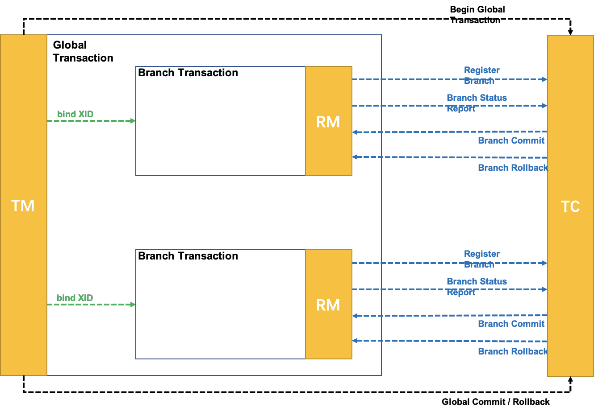
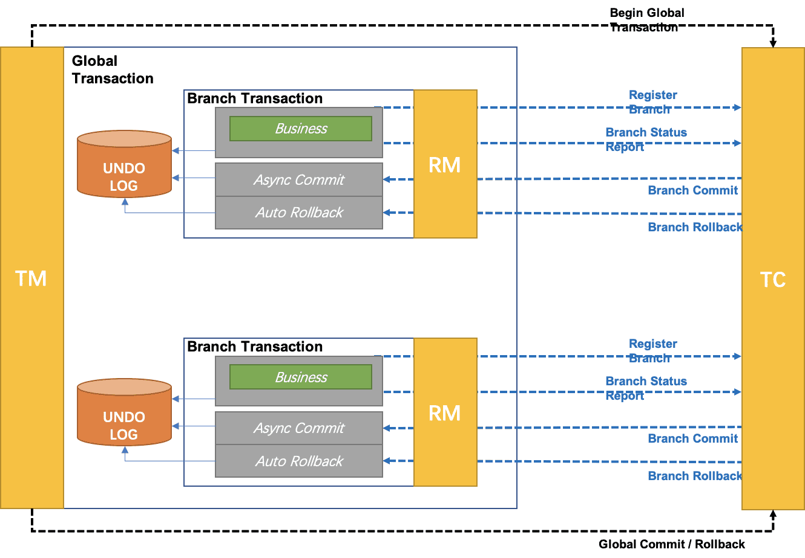
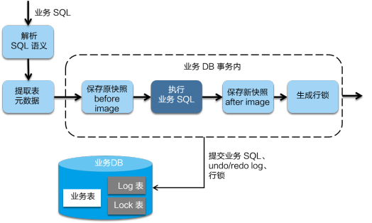
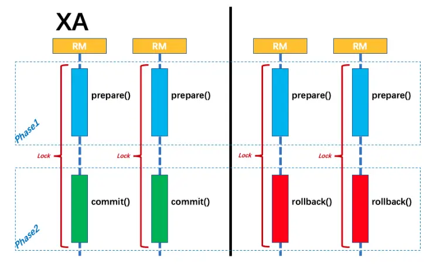
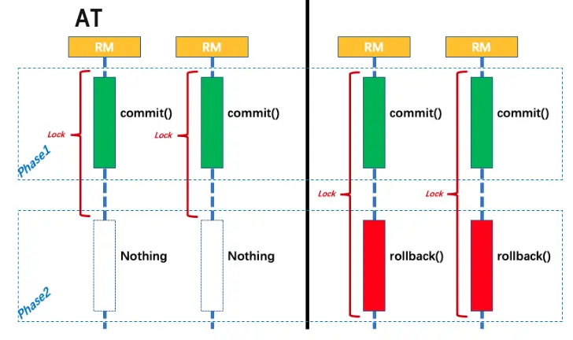
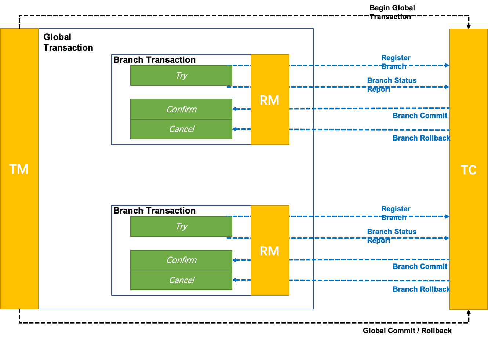
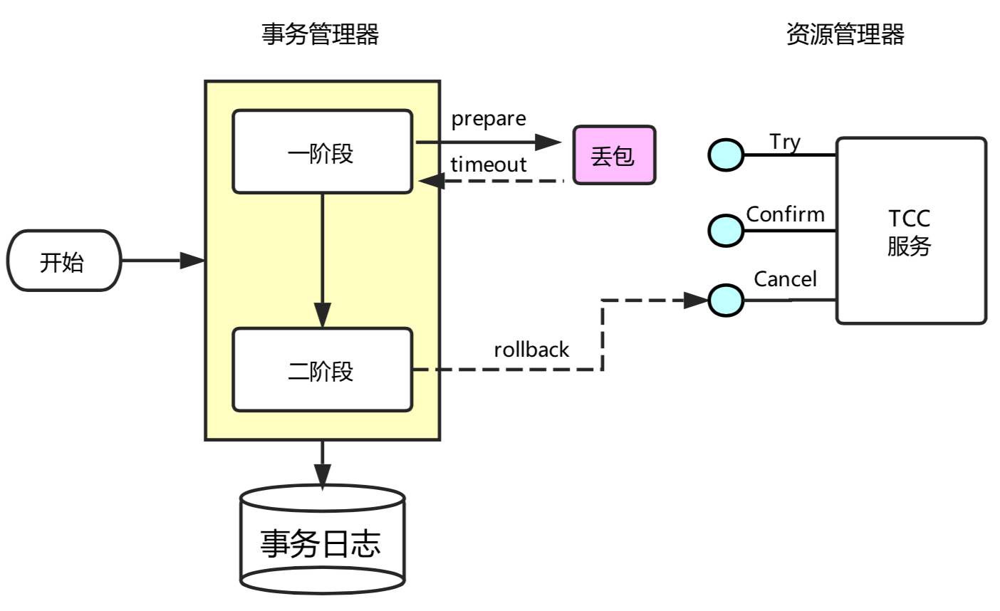
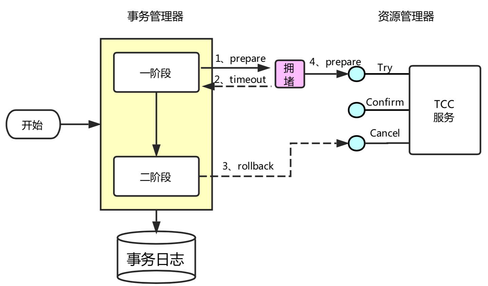
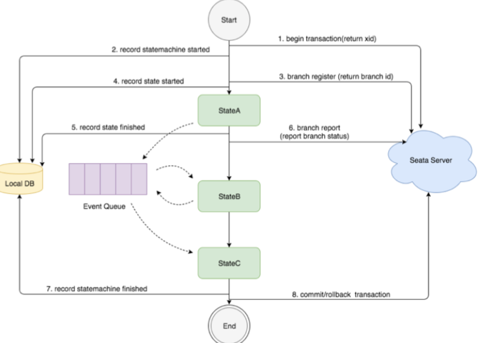

概述
Seata中有三大模块，分别是TC(事务协调器):维护全局事务的运行状态，负责协调并驱动全局事务的提交或回滚；TM(事务管理器)：控制全局事务的边界，负责开启一个全局事务，并最终发起全局提交或全局回滚的决议;RM(资源管理器)：控制分支事务，负责分支注册、状态汇报，并接收事务协调器的指令，驱动本地事务的提交和回滚。其中TM和RM是作为Seata的客户端与业务系统集成在一起，TC作为Seata的服务端独立部署。

执行分布式事务时：->
TM向TC请求发起（Begin）、提交（Commit）、回滚（Rollback）全局事务；->TM把代表全局事务的XID绑定到分支事务上；->RM向TC注册，把分支事务关联到XID代表的全局事务中；->RM把分支事务的执行结果上报给TC（可选，默认关闭）；->TM结束分布式事务，事务一阶段结束，TM通知TC提交/回滚分布式事务；->TC汇总事务信息，决定分布式事务是提交还是回滚；->TC通知所有RM提交/回滚资源，事务二阶段结束；
AT方案
AT属于无侵入的分布式事务解决方案，为两阶段提交的变种。

在一阶段，
Seata通过代理数据源，拦截解析业务SQL语义，找到业务SQL要更新的业务数据，在业务数据被更新前，将其保存成beforeimage，然后执行业务SQL更新业务数据，在业务数据更新之后，将其保存成afterimage，把业务数据在更新前后的数据镜像组织成回滚日志。先申请本地数据库写锁，成功后向
TC申请关于这条记录的全局行锁，成功后将业务SQL和undolog写入同一个事务中，提交到数据库中，保证业务SQL必定存在相应的回滚日志，保证一阶段操作的原子性，最后释放本地数据库锁，对分支事务状态向TC上报执行成功。如果获取全局锁失败，重试失败则回滚本地事务，并向TC汇报本地事务执行失败。

二阶段如果提交，立即释放相关记录的全局锁。因为业务SQL在一阶段已经提交至数据库，所以把提交请求放入一个异步任务的队列中，马上返回提交成功的结果给
TC。异步队列中的提交请求真正执行时，只是删除相应UNDOLOG和行锁，可以快速完成。

二阶段回滚，需要回滚一阶段已经执行的业务SQL，还原业务数据。
RM通过XID找到对应的undolog回滚日志。首先校验脏写，对比数据库当前业务数据和afterimage，如果两份数据完全一致就说明没有脏写，可以还原业务数据，生成并执行回滚的语句；如果不一致就说明有脏写，需要额外处理。最后用beforeimage还原业务数据，并删除undolog日志，释放全局锁。

隔离级别
读取：由于一阶段
RM自动提交本地事务的原因，默认隔离级别为ReadUncommitted，即可以读取到其他分布式事务未提交数据，本地事务隔离级别由本地DB决定。如果希望隔离级别为ReadCommitted，需要使用SELECT...FORUPDATE语句进行当前读，同时代理方法增加@GlobalLock注解。此时会先申请本地锁再申请全局锁。如果获取全局锁失败，则释放本地锁并重试，直到持有该全局锁的分布式事务提交，当前查询获得全局锁，读取到其他分布式事务已提交数据。
性能
XA方案事务性资源的锁都要保持到Phase2完成才释放。AT将锁分为了本地锁和全局锁，本地锁由本地事务管理，在分支事务一阶段结束时释放，全局锁由TC管理，在二阶段全局提交时，全局锁立即释放，二阶段回滚时，全局锁被持有至分支的二阶段结束。AT剥离了分布式事务方案对数据库在协议支持上的要求，避免XA协议需要同步协调导致资源锁定时间过长的问题。

TCC方案
概述
TCC属于两阶段提交的改进，同时属于有侵入的分布式事务方案。需要在
RM处手动实现Try,Comform,Cancel，并且由业务层面实现Cancel保证可回滚以及回滚数据的持久化。TM在第一阶段询问所有RM是否成功，如果所有资源均准备成功，则在第二阶段执行所有资源的Comform操作，否则在第二阶段执行所有资源的Cancel操作。由于Try同步调用，其结果会影响到二阶段决策，因此TCC分布式事务解决方案适用于执行时间确定且较短的业务。在TCC方案中，
RM（资源管理器）需要提供准备、提交和回滚3个操作；

一阶段：
TRY检查资源是否充足，并进行资源冻结，此时资源总数不变，被冻结资源将不能挪用。此时其他并发事务可以继续消费未被冻结资源，不阻塞其余事务。二阶段：使用一阶段预冻结资源完成业务流程，执行成功后变更资源总数和被冻结资源，执行失败后释放冻结资源。由于只使用本事务一阶段冻结资源，其余事务冻结资源不会对当前事务的第二阶段执行产生影响。

容错性
允许空回滚：在
TRY接口因为丢包时没有收到，事务管理器会触发回滚，这时会触发Cancel接口，这时Cancel执行时发现没有对应的事务XID或主键时，需要返回回滚成功。

防悬挂控制：
TRY由于网络拥堵而超时，Cancel比TRY接口先执行，成功空回滚，此时如果TRY请求到达，则不应该执行。通过在RM处保留已执行回滚事务XID，TRY接口先检查事务XID是否回滚，如果已回滚则不执行TRY的业务操作。

幂等性：一次请求和重复的多次请求对系统资源的影响是一致的，在
RM处保留XID对应事务Try,Comform,Cancel执行情况，用事务XID判重。
saga方案
Saga模式属于有侵入是分布式事务方案。各个阶段无直接耦合，参与者可以采用事务驱动异步执行高吞吐，通过逆向操作完成回滚。每个阶段完成后提交本地事务，无全局锁，长流程情况下可以保证性能。由于正向阶段无全局锁，且未进行进行资源预留，其他事务可以在分布式事务未完成时，读取到已完成阶段修改的数据，不能保证隔离性

XA方案
XA属于无侵入式两阶段提交变种，通过分布式事务提交前一直持有锁的方式，保障从任意视角对数据的访问有效隔离，满足全局数据一致性，性能很差。
AT实现
分布式事务入口
启动配置类
GlobalTransactionScanner实现了AbstractAutoProxyCreator接口，本质上是一个BeanPostProcessor，会扫描全部bean，在bean初始化之前，调用内部的postProcessBeforeInstantiation方法，获取与被代理对象匹配的拦截器，创建AOP代理bean，完成逻辑增强。
public abstract class AbstractAutoProxyCreator implements SmartInstantiationAwareBeanPostProcessor, // 获取bean匹配拦截器，完成代理对象创建 public Object postProcessBeforeInstantiation(Class<?> beanClass, String beanName) { Object cacheKey = getCacheKey(beanClass, beanName); TargetSource targetSource = getCustomTargetSource(beanClass, beanName); if (targetSource != null) { if (StringUtils.hasLength(beanName)) { this.targetSourcedBeans.add(beanName); } // 获取bean匹配拦截器 Object[] specificInterceptors = getAdvicesAndAdvisorsForBean(beanClass, beanName, targetSource); // 创建代理对象 Object proxy = createProxy(beanClass, beanName, specificInterceptors, targetSource); this.proxyTypes.put(cacheKey, proxy.getClass()); return proxy; } return null; }}与分布式事务相关的拦截器由
GlobalTransactionScanner#wrapIfNecessary生成。他将为添加有@GlobalTransactional的类创建拦截器AdapterSpringSeataInterceptor(ProxyInvocationHandler)。由ProxyInvocationHandler真正执行代理拦截。
xpublic class AdapterSpringSeataInterceptor implements MethodInterceptor, SeataInterceptor, Ordered {
private ProxyInvocationHandler proxyInvocationHandler; // 拦截器持有proxyInvocationHandler用于拦截DB调用 public AdapterSpringSeataInterceptor(ProxyInvocationHandler proxyInvocationHandler) { this.proxyInvocationHandler = proxyInvocationHandler; } // 请求拦截交由proxyInvocationHandler实现 public Object invoke( MethodInvocation invocation) throws Throwable { AdapterInvocationWrapper adapterInvocationWrapper = new AdapterInvocationWrapper(invocation); Object result = proxyInvocationHandler.invoke(adapterInvocationWrapper); return result; }}ProxyInvocationHandler通过GlobalTransactionalInterceptorHandler代理doInvoke方法，拦截带有GlobalTransactional注解或者GlobalLock注解的方法，构建当前操作事务，交由handleGlobalTransaction或者handleGlobalLock执行。对于
handleGlobalTransaction由于需要开启新的分布式事务，由模板类TransactionalTemplate执行事务方法的反射调用。
xxxxxxxxxxpublic class GlobalTransactionalInterceptorHandler extends AbstractProxyInvocationHandler implements ConfigurationChangeListener {
private static final Logger LOGGER = LoggerFactory.getLogger(GlobalTransactionalInterceptorHandler.class);
private final TransactionalTemplate transactionalTemplate = new TransactionalTemplate(); private final GlobalLockTemplate globalLockTemplate = new GlobalLockTemplate();
protected Object doInvoke(InvocationWrapper invocation) throws Throwable { Class<?> targetClass = invocation.getTarget().getClass(); // 事务方法信息 Method specificMethod = ClassUtils.getMostSpecificMethod(invocation.getMethod(), targetClass); if (specificMethod != null && !specificMethod.getDeclaringClass().equals(Object.class)) { // 拦截带有`GlobalTransactional`注解的方法 final GlobalTransactional globalTransactionalAnnotation = getAnnotation(specificMethod, targetClass, GlobalTransactional.class); // 拦截带有`GlobalLock`注解的方法 final GlobalLock globalLockAnnotation = getAnnotation(specificMethod, targetClass, GlobalLock.class); // 是否开启分布式事务 boolean localDisable = disable || (ATOMIC_DEGRADE_CHECK.get() && degradeNum >= degradeCheckAllowTimes); if (!localDisable) { if (globalTransactionalAnnotation != null || this.aspectTransactional != null) { // 如果是带有`GlobalTransactional`注解的方法，通过handleGlobalTransaction执行 AspectTransactional transactional=initTransactional() return handleGlobalTransaction(invocation, transactional); } else if (globalLockAnnotation != null) { // 如果是带有`GlobalLock`注解的方法，通过handleGlobalLock执行 return handleGlobalLock(invocation, globalLockAnnotation); } } } return invocation.proceed(); }
Object handleGlobalTransaction(final InvocationWrapper methodInvocation, final AspectTransactional aspectTransactional) throws Throwable { boolean succeed = true; return transactionalTemplate.execute(new TransactionalExecutor() { public Object execute() throws Throwable { return methodInvocation.proceed(); } }); }}
TransactionalTemplate用于在分布式事务下执行本地事务方法，同时向TC发起开始、提交、回滚请求。其中与TC通信部分由DefaultGlobalTransaction实现。
xxxxxxxxxxpublic class TransactionalTemplate { public Object execute(TransactionalExecutor business) throws Throwable { // 1. 获取分布式事务 GlobalTransaction tx = GlobalTransactionContext.getCurrent(); try { // 2. 向TC发起请求开始全局事务 beginTransaction(txInfo, tx); Object rs = null; try { // 执行业务逻辑 rs = business.execute(); } catch (Throwable ex) { // 3.业务逻辑异常，rollback全局事务 completeTransactionAfterThrowing(txInfo,tx,ex); throw ex; } // 4. commit全局事务 commitTransaction(tx); return rs; } finally { //5. 清理 triggerAfterCompletion(); cleanUp(); }}启动配置
seata启动依赖自动配置类。在io.seata-spring-boot-starter下的spring.factories中包含以下启动配置类xxxxxxxxxx# Auto Configureorg.springframework.boot.autoconfigure.EnableAutoConfiguration=\io.seata.spring.boot.autoconfigure.SeataAutoConfiguration,\io.seata.spring.boot.autoconfigure.SeataDataSourceAutoConfiguration,\用于配置全局事务扫描器
GlobalTransactionScanner用于TM, MC实例化数据源代理SeataAutoDataSourceProxyCreator用于拦截业务操作，生成boforeImage, afterImage，保证分布式事务的持久化和可回滚特性。
数据源代理
Seata为与数据源相关的组件构建包装类DataSourceProxy, ConnectionProxy, StatementProxy, PreparedStatementProxy，用于在 SQL 语句执行前后、事务 commit 或者 rollback 前后进行与分布式事务相关的操作，例如分支注册、状态上报、全局锁生成、全局锁查询、快照存储、反向SQL生成等。
SeataDataSourceAutoConfiguration自动配置类中实例化了SeataAutoDataSourceProxyCreator，SeataAutoDataSourceProxyCreator继承了AbstractAutoProxyCreator，通过AOP方式把目标对象转换成代理对象的后置处理器。即SeataAutoDataSourceProxyCreator实现为数据源对象创建代理。
xxxxxxxxxxpublic class SeataAutoDataSourceProxyCreator extends AbstractAutoProxyCreator { private final Object[] advisors; private Object[] buildAdvisors(String dataSourceProxyMode) { Advice advice = new SeataAutoDataSourceProxyAdvice(dataSourceProxyMode); return new Object[]{new DefaultIntroductionAdvisor(advice)}; }
protected boolean shouldSkip(Class<?> beanClass, String beanName) { if (excludes.contains(beanClass.getName())) { return true; } return SeataProxy.class.isAssignableFrom(beanClass); }}SeataAutoDataSourceProxyAdvice用于拦截原始数据源的方法调用，具体的在invoke方法中通过反射使用代理对象执行方法调用，添加自身逻辑。
xxxxxxxxxxpublic class SeataAutoDataSourceProxyAdvice implements MethodInterceptor, IntroductionInfo { // 拦截原始数据源方法调用，将原始数据源替换为代理数据源 public Object invoke(MethodInvocation invocation) throws Throwable { // 方法执行的基本信息 Method method = invocation.getMethod(); String name = method.getName(); Class<?>[] parameterTypes = method.getParameterTypes(); declared = DataSource.class.getDeclaredMethod(name, parameterTypes); // 将原始数据源替换为代理数据源 DataSource origin = (DataSource) invocation.getThis(); SeataDataSourceProxy proxy = DataSourceProxyHolder.get(origin); Object[] args = invocation.getArguments(); // 使用代理数据源执行方法调用 return declared.invoke(proxy, args); }}数据源代理对象
SeataDataSourceProxy的构建由SeataAutoDataSourceProxyCreator的父类AbstractAutoProxyCreator触发，由于AbstractAutoProxyCreator实现SmartInstantiationAwareBeanPostProcessor接口，postProcessAfterInitialization方法将会被自动执行，从而触发SeataAutoDataSourceProxyCreator#buildProxy执行，之后dataSource.getConnection获得的对象是ConnectionProxy对象。buildProxy中根据当前分布式事务方案选择不同的SeataDataSourceProxy。由于TCC, Saga通过有侵入方式执行分布式事务，由人工控制事务回滚，不要数据源代理。只有TA, XA方案需要数据源代理。
xxxxxxxxxxpublic class SeataAutoDataSourceProxyCreator extends AbstractAutoProxyCreator { SeataDataSourceProxy buildProxy(DataSource origin, String proxyMode) { // 为AT方案生成代理 if (BranchType.AT.name().equalsIgnoreCase(proxyMode)) { return new DataSourceProxy(origin); } // 为XA方案生成数据源代理 if (BranchType.XA.name().equalsIgnoreCase(proxyMode)) { return new DataSourceProxyXA(origin); } throw new IllegalArgumentException("Unknown dataSourceProxyMode: " + proxyMode); }}连接代理
数据源代理对象根据传递的原始数据源，获得原始数据源的连接对象，并得到代理的连接对象
ConnectionProxyXA, ConnectionProxyXA，代理commit方法，实现提交本地事务前获取行锁，之后根据被拦截方法备注类型执行不同调用。如果使用
@GlobalTransaction注解，将会开启分布式事务，调用processGlobalTransactionCommit完成提交事务时生成并写入undolog、最后提交本地事务，将业务修改和UndoLog一并提交。如果使用
@GlobalLock注解，说明该方法并非某个全局事务下的分支事务，希望某个不在全局事务下的操作不影响分布式事务。此时对数据资源的操作也需要先查询全局锁，如果存在其全局事务正在修改，则该方法也需等待，以在分布式事务下防止脏读。此时将调用processLocalCommitWithGlobalLocks，通过RM完成全局锁获取，获取成功后再提交本地事务，获取失败则进入等待重试阶段。
xxxxxxxxxxpublic class ConnectionProxy extends AbstractConnectionProxy { public void commit() throws SQLException { // 提交本地事务前需要获取行锁 lockRetryPolicy.execute(() -> { doCommit(); return null; }); } private void doCommit() throws SQLException { // 根据事务添加注解不同有不同处理方式 if (context.inGlobalTransaction()) { // 使用@GlobalTransaction注解修饰方法 processGlobalTransactionCommit(); } else if (context.isGlobalLockRequire()) { // 使用@GlobalLock注解修饰方法 processLocalCommitWithGlobalLocks(); } else { targetConnection.commit(); } } private void processGlobalTransactionCommit() throws SQLException { // 调用RM#branchRegister注册分支事务，获得branchid register(); // 刷新写入undolog UndoLogManagerFactory.getUndoLogManager(this.getDbType()).flushUndoLogs(this); // 向原始数据源写入数据，将业务修改和UndoLog一并提交 targetConnection.commit(); // 是否报告一阶段提交完成，默认为false if (IS_REPORT_SUCCESS_ENABLE) { // 通过RM#branchReport向TC汇报分支状态为一阶段成功 report(true); } context.reset(); } private void processLocalCommitWithGlobalLocks() throws SQLException { // 尝试获取全局锁，在分布式事务下防止脏读 checkLock(context.buildLockKeys()); try { // 不存在占据当前行的分布式事务，则提交本地事务 targetConnection.commit(); } catch (Throwable ex) { throw new SQLException(ex); } context.reset(); }}执行代理

当通过连接代理
conn.prepareStatement获得PreparedStatement时同样返回生成的代理实现PreparedStatementProxy，connection.prepareStatement获得的是PreparedStatementProxy对象。PreparedStatementProxy#execute在被调用后完成SQL解析和执行。当使用PreparedStatementProxy#execute执行SQL时，将委托ExecuteTemplate代为执行。
xxxxxxxxxxpublic class PreparedStatementProxy extends AbstractPreparedStatementProxy implements PreparedStatement, ParametersHolder { // 委托`ExecuteTemplate`代为执行 public boolean execute() throws SQLException { return ExecuteTemplate.execute(this, (statement, args) -> statement.execute()); }}ExecuteTemplate根据SQL类型生成具体执行类：InsertExecutor, SqlServerUpdateExecutor, SqlServerDeleteExecutor, SqlServerSelectForUpdateExecutor。
xxxxxxxxxxpublic class ExecuteTemplate { public static <T, S extends Statement> T execute(List<SQLRecognizer> sqlRecognizers, StatementProxy<S> statementProxy, StatementCallback<T, S> statementCallback, Object... args) throws SQLException { Executor<T> executor; SQLRecognizer sqlRecognizer = sqlRecognizers.get(0); // 根据SQL类型生成具体执行类 switch (sqlRecognizer.getSQLType()) { case INSERT: getExecutor case UPDATE: getExecutor case DELETE: getExecutor case SELECT_FOR_UPDATE: getExecutor } T rs; // 调用执行器的 execute 方法 rs = executor.execute(args); return rs; }一阶段拦截
此处同样使用了模板模式，上述执行类都继承自
AbstractDMLBaseExecutor，AbstractDMLBaseExecutor实现了executeAutoCommitFalse方法，完成SQL执行、boforeImage, afterImage、全局锁记录、构建回滚日志对象添加到ConnectionProxy上下文，尝试将其和业务修改在同一事务中提交，保证了一阶段操作的原子性。由于不同数据库针对INSERT、UPDATE、DELETE有不同的实现具体，boforeImage, afterImage生成由子类具体实现。生成全局锁记录时根据表名+主键值生成全局锁，如果是增加或者更改则使用更新后的
afterImage生成锁记录；如果是删除使用beforeImage生成锁记录。生成锁记录放入connectionProxy，等待向TC发起获取全局锁申请，如果获取成功，则提交本地事务，如果失败进入等待重试。
xxxxxxxxxxpublic abstract class AbstractDMLBaseExecutor<T, S extends Statement> extends BaseTransactionalExecutor<T, S> { // 执行SQL执行、`boforeImage, afterImage`生成 protected T executeAutoCommitFalse(Object[] args) throws Exception { // 执行SQL前生成快照 TableRecords beforeImage = beforeImage(); // 本地DB执行SQL T result = statementCallback.execute(statementProxy.getTargetStatement(), args); // 执行SQL后生成快照 TableRecords afterImage = afterImage(beforeImage); // 整合beforeImage和afterImage，生成undolog插入到代理连接的上下文，用于后续回滚分布式事务 prepareUndoLog(beforeImage, afterImage); return result; } // 具体的`boforeImage, afterImage`生成由子类具体实现 protected abstract TableRecords beforeImage() throws SQLException; protected abstract TableRecords afterImage(TableRecords beforeImage) throws SQLException; // 准备undolog protected void prepareUndoLog(TableRecords beforeImage, TableRecords afterImage) throws SQLException { ConnectionProxy connectionProxy = statementProxy.getConnectionProxy(); // 生成根据表名+主键值生成全局锁 // 如果是增加或者更改则使用更新后的afterImage生成锁记录 // 如果是删除使用beforeImage生成锁记录 TableRecords lockKeyRecords = sqlRecognizer.getSQLType() == SQLType.DELETE ? beforeImage : afterImage; String lockKeys = buildLockKey(lockKeyRecords); if (null != lockKeys) { // 添加lockKey全局记录锁放入`ConnectionProxy`上下文 connectionProxy.appendLockKey(lockKeys); // 根据beforeImage, afterImage生成undolog SQLUndoLog sqlUndoLog = buildUndoItem(beforeImage, afterImage); // 将回滚日志添加到`ConnectionProxy`上下文 connectionProxy.appendUndoLog(sqlUndoLog); } }}

TM初始化
全局事务扫描器
GlobalTransactionScanner实现了InitializingBean接口，将有spring自动调用afterPropertiesSet完成initClient调用，从而完成RM, TM初始化，初始化的参数来自application.yml。
xxxxxxxxxxpublic class GlobalTransactionScanner implements InitializingBean, private void initClient() { //初始化 TM TMClient.init(applicationId, txServiceGroup, accessKey, secretKey); //初始化 RM RMClient.init(applicationId, txServiceGroup); registerSpringShutdownHook(); } public void afterPropertiesSet() { // cas保证每个节点RM，TM只会初始化一次 if (initialized.compareAndSet(false, true)) { initClient(); } }}TM的作用是开启以及提交全局事务，TMClient初始化主要完成:创建连接池；创建并启动客户端Netty；创建并启动用于RPC交互的线程池。TM的实例由TmNettyRemotingClient#getInstance获得。获取时使用双检查模式，保证每个节点只存在一个TM。内部持有一个线程池，用于处理与TC, RM之间的RPC通信。初始化
TM时，根据service_group得到cluster_name，从注册中心(例如Nacos)获得TC地址，建立与TC之间的连接，并注册自身，TC地址通过注册中心(例如Nacos)获得，此时同样使用双检查，避免重复连接。
xxxxxxxxxxpublic final class TmNettyRemotingClient extends AbstractNettyRemotingClient { public static TmNettyRemotingClient getInstance() { // 双检查模式, 保证单例 if (instance == null) { synchronized (TmNettyRemotingClient.class) { if (instance == null) { NettyClientConfig nettyClientConfig = new NettyClientConfig(); // 线程池用于处理与TC， RM之间的`RPC`通信 final ThreadPoolExecutor messageExecutor = new ThreadPoolExecutor( nettyClientConfig.getClientWorkerThreads(), nettyClientConfig.getClientWorkerThreads(), KEEP_ALIVE_TIME, TimeUnit.SECONDS, new LinkedBlockingQueue<>(MAX_QUEUE_SIZE), new NamedThreadFactory(nettyClientConfig.getTmDispatchThreadPrefix(), nettyClientConfig.getClientWorkerThreads()), RejectedPolicies.runsOldestTaskPolicy()); instance = new TmNettyRemotingClient(nettyClientConfig, null, messageExecutor); } } } return instance; } private void initConnection() { // 与TC之间建立连接，`TC`地址通过注册中心获得， 前置双检查保证连接唯一 getClientChannelManager().reconnect(transactionServiceGroup); }}RM初始化
RM控制分支事务，负责分支注册、状态汇报，并接收TC的指令，驱动本地事务的提交和回滚。由于RM需要与本地数据库交互，同时接收TC指令，完成分布式事务的提交或者回滚，TM需要设置资源管理器DefaultResourceManager和分布式事务指令处理器DefaultRMHandler。RM的初始化和TM类似，实例对象通过RmNettyRemotingClient#getInstance获得。获取时使用双检查模式，保证每个节点只存在一个RM。同时内部持有一个线程池，用于处理与TC, TM之间的RPC通信，详见RmNettyRemotingClient#getInstance。初始化
RM时，根据service_group得到cluster_name，从注册中心(例如Nacos)获得TC地址，建立与TC之间的连接，并注册自身，TC地址通过注册中心(例如Nacos)获得，此时同样使用双检查，避免重复连接，详见NettyClientChannelManager#reconnect。xxxxxxxxxxpublic class RMClient {public static void init(String applicationId, String transactionServiceGroup) {// 初始化RmNettyRemotingClient rmNettyRemotingClient = RmNettyRemotingClient.getInstance(applicationId, transactionServiceGroup);// 设置资源管理器，与本地数据库交互rmNettyRemotingClient.setResourceManager(DefaultResourceManager.get());// 布式事务指令处理器,完成分布式事务的提交或者回滚rmNettyRemotingClient.setTransactionMessageHandler(DefaultRMHandler.get());rmNettyRemotingClient.init();}}
指令Handler
RM的DefaultRMHandler属于适配器，适配所有分布式事务方案(AT, TCC, SAGA, XA)下TC发送的RPC通信调用处理，接受TC的分支提交/回滚请求，内部持有真正的RMHandler用于处理TC发送的提交或者回滚分布式事务RPC指令。
xxxxxxxxxxpublic class DefaultRMHandler extends AbstractRMHandler { // 存储`AT, TCC, SAGA, XA`下处理`TC`发送的`RPC`通信调用的Handler protected static Map<BranchType, AbstractRMHandler> allRMHandlersMap = new ConcurrentHashMap<>();
// 收到TC提交指令时，委托当前事务模式下真正的Handler完成事务提交 public BranchCommitResponse handle(BranchCommitRequest request) { return getRMHandler(request.getBranchType()).handle(request); }
// 收到TC回滚指令时，委托当前事务模式下真正的Handler完成事务回滚 public BranchRollbackResponse handle(BranchRollbackRequest request) { return getRMHandler(request.getBranchType()).handle(request); }AbstractRMHandler主要有四种实现类：RMHandlerAT, RMHandlerXA, RMHandlerSaga, RMHandlerTCC，分别对应于AT, XA, Saga, TCC这四种分布式事务方案。四个具体的RM都继承自AbstractRMHandler，此处使用模板模式，AbstractRMHandler实现了处理TC发送的提交或者回滚分布式事务指令的方法。无论是提交还是回滚都将请求转发给当前分布式事务方案下的RM，完成undolog的删除或者根据undolog还原本地数据。
xxxxxxxxxxpublic abstract class AbstractRMHandler extends AbstractExceptionHandler implements RMInboundHandler, TransactionMessageHandler {
// 处理TC发送的提交分布式事务请求 public BranchCommitResponse handle(BranchCommitRequest request) { BranchCommitResponse response = new BranchCommitResponse(); exceptionHandleTemplate(new AbstractCallback<BranchCommitRequest, BranchCommitResponse>() { public void execute(BranchCommitRequest request, BranchCommitResponse response) throws TransactionException { // 触发对应分布式事务方案下ResourceManager#branchRollback执行，委托RM完成事务提交 doBranchCommit(request, response); } }, request, response); return response; }
// 处理TC发送的回滚分布式事务请求 public BranchRollbackResponse handle(BranchRollbackRequest request) { BranchRollbackResponse response = new BranchRollbackResponse(); exceptionHandleTemplate(new AbstractCallback<BranchRollbackRequest, BranchRollbackResponse>() { public void execute(BranchRollbackRequest request, BranchRollbackResponse response) throws TransactionException { // 触发对应分布式事务方案下ResourceManager#branchRollback执行，委托RM完成事务回滚 doBranchRollback(request, response); } }, request, response); return response; }}RM适配
DefaultResourceManager属于适配器，适配所有分布式事务方案(AT, TCC, SAGA, XA)下的RM调用，内部持有真正的RM用于执行真正的方法调用。
xxxxxxxxxxpublic class DefaultResourceManager implements ResourceManager { // 持有真正的RM对象 protected static Map<BranchType, ResourceManager> resourceManagers = new ConcurrentHashMap<>(); // 向TC注册本地分支 public Long branchRegister(BranchType branchType, String resourceId, String clientId, String xid, String applicationData, String lockKeys){ return getResourceManager(branchType).branchRegister(branchType, resourceId, clientId, xid, applicationData, lockKeys); } // 向TC汇报本地事务执行状况 public void branchReport(BranchType branchType, String xid, long branchId, BranchStatus status, String applicationData){ getResourceManager(branchType).branchReport(branchType, xid, branchId, status, applicationData); } // 接收TC指令提交分布式事务 public BranchStatus branchCommit(BranchType branchType, String xid, long branchId, String resourceId, String applicationData){ return getResourceManager(branchType).branchCommit(branchType, xid, branchId, resourceId, applicationData); } // 接收TC指令回滚分布式事务 public BranchStatus branchRollback(BranchType branchType, String xid, long branchId, String resourceId, String applicationData){ return getResourceManager(branchType).branchRollback(branchType, xid, branchId, resourceId, applicationData); }}二阶段提交
如果一阶段完成未抛异常，全局事务的发起方会向服务端申请提交全局事务，服务端根据
xid查询加锁并关闭全局事务，防止该事务后续还有分支继续注册，同时将其状态从Begin修改为Committing。二阶段提交时，客户端接收到服务端发送的branch commit请求，交由AbstractRMHandler#handle处理，之后根据resourceId找到相应的ResourceManager进行后续处理。ResourceManager主要有四种实现类：DataSourceManager, ResourceManagerXA, SagaResourceManager, TCCResourceManager，分别对应于AT, XA, Saga, TCC这四种分布式事务方案。四个具体的RM都继承自AbstractResourceManager，此处使用模板模式，AbstractResourceManager实现了向TC注册和汇报的方法，由于各个分布式方案的提交与回滚方式不一致，提交与回滚方法由具体RM实现。注册时携带分支的
xid,resourceId, 分布式事务方案类型, 行锁注册到TC，获得分支ID。如果行锁指定的记录被其他分布式事务锁定，将注册失败，等待后续重试。
xxxxxxxxxxpublic abstract class AbstractResourceManager implements ResourceManager { // 携带分支的xid, resourceId, 分布式事务方案类型, 行锁注册到TC，获得分支ID public Long branchRegister(BranchType branchType, String resourceId, String clientId, String xid, String applicationData, String lockKeys) throws TransactionException { BranchRegisterRequest request = new BranchRegisterRequest(); request.setXid(xid); // 行锁指定的记录被其他分布式事务锁定，将注册失败，等待后续重试 request.setLockKey(lockKeys); request.setResourceId(resourceId); request.setBranchType(branchType); request.setApplicationData(applicationData); BranchRegisterResponse response = (BranchRegisterResponse) RmNettyRemotingClient.getInstance().sendSyncRequest(request); return response.getBranchId(); } // 携带分支的xid, 分支ID, 本地事务执行状态向TC汇报 public void branchReport(BranchType branchType, String xid, long branchId, BranchStatus status, String applicationData) throws TransactionException { BranchReportRequest request = new BranchReportRequest(); request.setXid(xid); request.setBranchId(branchId); request.setStatus(status); request.setApplicationData(applicationData); BranchReportResponse response = (BranchReportResponse) RmNettyRemotingClient.getInstance().sendSyncRequest(request); }}以实现
AT方案的DataSourceManager为例，继承自AbstractResourceManager，实现自己的执行本地事务、提交与回滚分布式事务的方法。在向
TC汇报本地事务执行成功前，需要根据数据库表名和主键值生成lockKeys，用于标识需要锁定的数据库记录，通过lockQuery向TC发起获取数据库记录全局锁请求，如果成功这本地事务上报为成功，否则证明记录被其他尚未提交分布式事务占有，获取全局锁失败，进入等待重试阶段。
xxxxxxxxxxpublic class DataSourceManager extends AbstractResourceManager { // 在TC处尝试获取全局记录锁，锁定要修改记录 public boolean lockQuery(BranchType branchType, String resourceId, String xid, String lockKeys){ GlobalLockQueryRequest request = new GlobalLockQueryRequest(); request.setXid(xid); // 根据数据库表名和主键值生成`lockKeys`，用于标识需要锁定的数据库记录 request.setLockKey(lockKeys); request.setResourceId(resourceId); GlobalLockQueryResponse response; response = (GlobalLockQueryResponse) RmNettyRemotingClient.getInstance().sendSyncRequest(request); return response.isLockable(); }}通过
branchCommit提交分布式事务时，由于本地事务已提交，数据已被持久化修改，立即释放相关记录的全局锁，修改全局事务状态为AsyncCommitting，把提交请求放入一个异步任务的队列中，马上返回提交成功的结果给TC。异步队列中的提交请求真正执行时，只是删除相应UNDOLOG和行锁，可以快速完成。

xxxxxxxxxxpublic class DataSourceManager extends AbstractResourceManager { private final AsyncWorker asyncWorker = new AsyncWorker(this); // 接受TC指令，提交分布式事务 public BranchStatus branchCommit(BranchType branchType, String xid, long branchId, String resourceId, String applicationData){ // 提交任务至任务队列，异步执行 return asyncWorker.branchCommit(xid, branchId, resourceId); }}AsyncWorker为异步任务执行者，内部持有柱塞式任务队列BlockingQueue，提交的分布式事务加入柱塞队列，并通过ScheduledExecutorService，每隔1s从队列中取出要提交的事务，undoLogManager根据xid, branchid生成删除undolog的sql语句,并通过DataSourceProxy执行sql，批量删除undolog，完成分布式事务的提交。
xxxxxxxxxxpublic class AsyncWorker { // 柱塞式任务队列，任务直接加入队列即返回 private final BlockingQueue<Phase2Context> commitQueue; // 定时任务消费任务队列中任务，完成批量提交分布式事务 private final ScheduledExecutorService scheduledExecutor;
public AsyncWorker(DataSourceManager dataSourceManager) { this.dataSourceManager = dataSourceManager; commitQueue = new LinkedBlockingQueue<>(ASYNC_COMMIT_BUFFER_LIMIT); ThreadFactory threadFactory = new NamedThreadFactory("AsyncWorker", 2, true); scheduledExecutor = new ScheduledThreadPoolExecutor(2, threadFactory); // 定时任务每隔1s执行一次 scheduledExecutor.scheduleAtFixedRate(this::doBranchCommitSafely, 10, 1000, TimeUnit.MILLISECONDS); } // DataSourceManager提交分布式事务时，加入队列即返回，任务异步执行 public BranchStatus branchCommit(String xid, long branchId, String resourceId) { Phase2Context context = new Phase2Context(xid, branchId, resourceId); addToCommitQueue(context); return BranchStatus.PhaseTwo_Committed; }
// 固定延迟调度消费任务队列中任务 private void dealWithGroupedContexts(String resourceId, List<Phase2Context> contexts) { // DataSourceProxy为数据源代理，实现undolog的生成、提交、删除，undolog的操作交与 DataSourceProxy执行 DataSourceProxy dataSourceProxy = dataSourceManager.get(resourceId); Connection conn = null; conn = dataSourceProxy.getPlainConnection(); UndoLogManager undoLogManager = UndoLogManagerFactory.getUndoLogManager(dataSourceProxy.getDbType()); // 任务任务分为多个组，每组长为1000 List<List<Phase2Context>> splitByLimit = Lists.partition(contexts, UNDOLOG_DELETE_LIMIT_SIZE); for (List<Phase2Context> partition : splitByLimit) { // undoLogManager根据xid, branchid生成删除undolog的sql语句 // 并通过conn.prepareStatement执行sql，批量删除undolog deleteUndoLog(conn, undoLogManager, partition); IOUtil.close(conn); }}二阶段回滚
回滚该全局事务时服务端会根据
xid查询全局事务，加锁关闭事务防止后续分支注册，并同时将状态Begin从变更为Rollbacking，再先客户端发送回滚指令。客户端收到TC发送的回滚指令时DefaultRMHandler#handle触发RM执行回滚。通过
branchRollback回滚分布式事务时，需要回滚一阶段已经执行的业务SQL，还原业务数据。RM通过XID找到对应的undolog回滚日志。首先校验脏写，对比数据库当前业务数据和afterimage，如果两份数据完全一致就说明没有脏写，可以还原业务数据，生成并执行回滚的语句；如果不一致就说明有脏写，需要额外处理。最后用beforeimage还原业务数据，并删除undolog日志，释放全局锁。

回滚时先根据
resourceId拿到对应的数据源代理，交由UndoLogManager执行回滚方法。
xxxxxxxxxxpublic class DataSourceManager extends AbstractResourceManager { private final Map<String, Resource> dataSourceCache = new ConcurrentHashMap<>(); // 接受TC指令，混滚分布式事务 public BranchStatus branchRollback(BranchType branchType, String xid, long branchId, String resourceId, String applicationData) throws TransactionException { DataSourceProxy dataSourceProxy = get(resourceId); UndoLogManagerFactory.getUndoLogManager(dataSourceProxy.getDbType()).undo(dataSourceProxy, xid, branchId); return BranchStatus.PhaseTwo_Rollbacked; }}UndoLogManager同样使用了模板模式，回滚的逻辑调用流程由UndoLogManager的实现类AbstractUndoLogManager完成，流程中涉及到与数据库的具体操作将由AbstractUndoLogManager的之类实现，AbstractUndoLogManager的之类有MySQLUndoLogManager, OracleUndoLogManager等，由他们实现和数据库的底层交互。在回滚方法中先关闭自动提交，保证回滚过程的原子性，从回滚数据表中根据
xid， branch找到undolog，并构建并执行回滚SQL， 数据回滚执行成功，从undolog表中删除对应的undolog记录，如果执行数据回滚或者删除回滚日志失败，回滚当前操作。失败时如果afterimage数据与当前数据库数据不匹配，证明存在脏数据，上报BranchTransactionException错误需要手动处理。
xxxxxxxxxxpublic abstract class AbstractUndoLogManager implements UndoLogManager { public void undo(DataSourceProxy dataSourceProxy, String xid, long branchId) throws TransactionException { ConnectionProxy connectionProxy = null; Connection conn = null; ResultSet rs = null; PreparedStatement selectPST = null; boolean originalAutoCommit = true; for (; ; ) { try { connectionProxy = dataSourceProxy.getConnection(); conn = connectionProxy.getTargetConnection(); // 关闭自动提交，保证回滚过程的原子性 if (originalAutoCommit = conn.getAutoCommit()) { conn.setAutoCommit(false); } // 从回滚数据表总根据xid， branch找到undolog selectPST = conn.prepareStatement(buildSelectUndoSql()); selectPST.setLong(1, branchId); selectPST.setString(2, xid); rs = selectPST.executeQuery(); boolean exists = false; while (rs.next()) { exists = true; // 获得回滚日志对象 String contextString = rs.getString(ClientTableColumnsName.UNDO_LOG_CONTEXT); Map<String, String> context = parseContext(contextString); byte[] rollbackInfo = getRollbackInfo(rs); String serializer = context == null ? null : context.get(UndoLogConstants.SERIALIZER_KEY); UndoLogParser parser = serializer == null ? UndoLogParserFactory.getInstance() : UndoLogParserFactory.getInstance(serializer); BranchUndoLog branchUndoLog = parser.decode(rollbackInfo); // 获得回滚SQL setCurrentSerializer(parser.getName()); List<SQLUndoLog> sqlUndoLogs = branchUndoLog.getSqlUndoLogs(); // 如果日志数量大于一，将SQL顺序反转，保证能还原到原始状态 // 正向：1->2->3 回滚：3->2->1 if (sqlUndoLogs.size() > 1) { Collections.reverse(sqlUndoLogs); } // 执行回滚SQL， for (SQLUndoLog sqlUndoLog : sqlUndoLogs) { TableMeta tableMeta = TableMetaCacheFactory.getTableMetaCache(dataSourceProxy.getDbType()).getTableMeta( conn, sqlUndoLog.getTableName(), dataSourceProxy.getResourceId()); sqlUndoLog.setTableMeta(tableMeta); AbstractUndoExecutor undoExecutor = UndoExecutorFactory.getUndoExecutor( dataSourceProxy.getDbType(), sqlUndoLog); undoExecutor.executeOn(connectionProxy); } } // 数据回滚执行成功，从undolog表中删除undolog if (exists) { deleteUndoLog(xid, branchId, conn); conn.commit(); } else { insertUndoLogWithGlobalFinished(xid, branchId, UndoLogParserFactory.getInstance(), conn); conn.commit(); } return; } catch (Throwable e) { // 执行数据回滚或者删除回滚日志失败，回滚当前操作 conn.rollback(); } // 如果afterimage数据与当前数据库数据不匹配，证明存在脏数据，需要手动处理 if (e instanceof SQLUndoDirtyException) { throw new BranchTransactionException(); } throw new BranchTransactionException(); } }}